| Mamoru Taku
Japanese potter; Article by Kiyomi
Noma
An Encounter with Organic Beauty
 A vase drew me into a small gallery in Kurashiki, Okayama Prefecture.
It was a vase with naturally graceful presence. There was perfect
harmony between the sand beige coloured base and the glowing scarlet
pattern on such a gentle form, I felt warm comfort surround me.
A vase drew me into a small gallery in Kurashiki, Okayama Prefecture.
It was a vase with naturally graceful presence. There was perfect
harmony between the sand beige coloured base and the glowing scarlet
pattern on such a gentle form, I felt warm comfort surround me.
This sensation was what I had been longing for in Bizen-ware since
my first Bizen experience in my childhood. I often visited galleries
that specialised in Bizen pottery in Tokyo, journeys attempting
to recapture those comfortable feelings. Despite my quest, ceramics
at stylish galleries in Tokyo left me cold and uninspired. My search
brought me to Okayama, the birthplace of Bizen. Unlike my expectations,
most of the works I saw were mass-produced expressionless souvenirs.
I had nearly come to the conclusion that Bizen had lost its warmth
until I chanced upon an exhibition in Kurashiki. I immediately sensed
a peaceful energy from the exhibits and explored them keenly with
my eyes and hands.
"What element makes your creations so warm and attractive?"
I could not help asking a man who appeared to be the potter in the
gallery.
"Well," the man chose his words carefully and replied, "It could
be the flavour of the clay."
This was how I encountered the Bizen potter, Mr. Mamoru Taku and
his works.
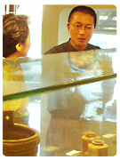
"I can see subtle gravel residue in your ceramics. The surface could
potentially appear rough with gravel, but on the contrary, the texture
shows a smooth organic flow. Would this be characteristic of Bizen
clay?"
Answering my question, Taku-san said,
"Bizen clay contains various organic properties (around 200 different
kinds) which I believe help to create the smooth texture of the
pottery. Even my hands have become very smooth after making Bizen
pottery for over two decades."
I read somewhere that Bizen potters used clay as a homemade vulnerary
ointment. Penicillin and other organic properties contained in Bizen
clay can cure wounds.
"My mission is to express this organic flavour of Bizen clay.
Thus, clay preparation is of prime importance in my work. The firing
techniques and shapes are decided based upon the clay and the chosen
theme of the work."
"The vase you were studying is shaped using a classical method,
called 'Himo-tsukuri (ring-stacking).' It is the best shaping technique
bringing the clay's flavour to that particular vase. Clay in artefacts
made with 'Himo-tsukuri' keep their organic properties in tact.
Due to its uneven texture the light on 'Himo-tsukuri' works is refracted.
It could be this aspect that makes the works appear somewhat warm."
Taku-san also told me that he had built his own kiln in order to
create the exact conditions for his creations. I was compelled to
explore "Himo-tsukuri" in more depth, to personally visit
Taku-san's kiln and understand the properties which made his subtle
creations so warm and attractive to the senses. I booked a ticket
to his studio in Takebe.
 Visiting
Takebe (opens in new
window) Visiting
Takebe (opens in new
window)
Devoir to Clay
Taku-san took me to an outdoor corner near his studio and showed me
how he prepares the clay for his pottery.
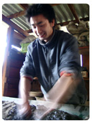
"This first procedure should be done quickly, it is simply to moisten
the clay. If you knead clay too much, then its subtle organic properties
are lost."
Taku-san explained, as his assistant and son, Shusaku demonstrated
the procedure of mixing ground soil and water.
Currently Taku-san keeps over 20 sorts of mixed clay in his studio.
He picked up some from the shelf.
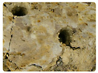
"This clay is the best for making 'Hidasuki' (fire-pattern on a light
base) works. I have not tampered with its content in any way. The
original clay, which is taken from the site, has just been moistened.
As you can see, this chunk contains various layers of different elements.
This clay includes natural elements I need for making old-style Bizen
'Hidasuki' works. However, it is not perfect, it is lacking one substantial
element, iron."
Taku-san showed me a fragment of pottery.
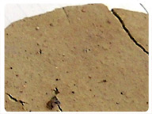
"This is a part of an old Hidasuki pottery. Do you see the tiny black
dots? These dots are oxidised iron created during the firing procedure.
Iron darkens the colour of the pottery and it is therefore quite contradictory
to include iron when making light-coloured Hidasuki works. Most contemporary
'Hidasuki' artists use clay without iron, resulting in a clear light
coloured piece."
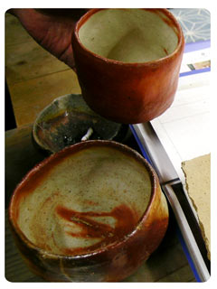
As a comparison, Taku-san brought two tea bowls.
"The bowl on the table has a high iron content whilst this one in
my hand contains less."
The work containing more iron is slightly mottled and has a darker
hue whilst the other has a very smooth clean finish. For me the bowl
with the higher iron content has a richer, more intense flavour.
"As I stated earlier, the best clay for 'Hidasuki' does not contain
iron, so I mix the clay with an iron-rich soil, taken from a site
near a historical kiln dating back more than 4 centuries. The iron-rich
soil is the equivalent to salt in cooking; it brings out the best
flavour of the material. This is the clay recipe I use for making
my classic 'Hidasuki' collections."
"Throughout my studies of old Bizen masterpieces, I found that sometimes
the ingredients contain elements that theoretically shouldn't be put
together. The iron in the 'Hidasuki' work I showed you earlier is
a good example. The old masterpieces teach me that the inclusion
of only the 'best' materials to the exclusion of all others does not
necessarily create the 'best' works. Sometimes baser materials are
complimentary and enhance the created texture. Having the right thing
in the right place with the correct balance is the key.
"Have you heard of a technical term, 'levigation?'
It is a process suspending soil in water to separate the coarser material
from clay, a method commonly used by potters today. You can prepare
huge amounts of clay with this method and levigated clay is soft and
easy to shape. 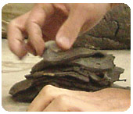
I personally choose not to use levigated clay because the clay becomes
homogenised and many of the original organic properties are lost during
this procedure
However, I still need to filter out larger pieces of gravel to avoid
holes being created in the potteries. In order to do this, I divide
the clay into very thin slices then remove any coarse gravel that
is thicker than these slices."
It was still a little hard for me to visualize the difference between
levigated clay and Taku-san's method and so I asked him,
"What happens if you mix seasoning clay such as the one containing
iron into levigated clay?"
He answered, "If you mix red and white paint, it makes pink paint.
But if you mix red sand into white sand, the result is different,
isn't it? The texture and colour is more mottled and uneven. Levigated
clay is more like paste.
Compared to levigation, my clay preparation is a process that requires
a lot of time and effort. If I prepared all my material with this
method then the number of items produced would be very limited.
"Time is a concern for another reason. My collection includes introductory
works for daily use such as mugs and cups. They are equally as important
to me as my classic collection. I am happy if people can enjoy the
flavour of the clay from my mugs and cups in their daily life, and
then gain something deeper from my classic collections.
It is not practical to prepare all the clay for both the introductory
and classic collections using the earlier stated filtering method
so I came up with a solution that kept the clay flavour as much as
possible but took less time. If I got rid of the coarse gravel at
the soil grinding stage instead of using the slice filtering method
I could keep the quality of the introductory works intact despite
producing a greater quantity of them."
Taku-san means quality not just for the appearance, but the durability
of the products as well. He keeps natural, unevenly grained organic
properties for scientific as well as aesthetic reasons.
"Apart from adding to the clay flavour, uneven grains in the clay
actually strengthen the pottery. If you take a micro view of the pottery
in the kiln, you would see two dynamisms at work. One is a stabilising
force, the fire, and the other is an expansive force from clay counteracting
inside clay. Clay has a natural tendency to expand in heat, but the
potteries are shaped in certain forms and the force of the fire stabilises
the form. Thus two enormous counteracting energies are created inside
the potteries. The space in the uneven grains of clay lets out the
extraneous energy and adjusts the internal force balance.
If you use clay with a very even grain, then the internal expanding
force is kept inside the potteries even after cooling. This remaining
expansive force is called 'intrinsic material stress' and becomes
activated when heated. So, if you microwave the potteries which still
have this 'intrinsic material stress', then the remaining expansive
force reacts with heat and it is likely to break from the inside.
That is another reason why I prepare uneven, naturally formed clay
for my potteries."
Stacking Soul into Shape
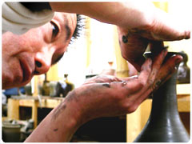
I came to learn that the vase that captured my attention at the gallery
in Kurashiki was one of Taku-san's lifeworks. It is called 'Hidasuki
Tsurukubi Vase,' translated as 'A Crane-necked vase with a fire pattern.'
Taku-san showed me the procedure of shaping the vase with the 'Himo-tsukuri
(Ring-Stacking)' method.
Find
more from the report
(opens in new window)
It was a soulful communication between Taku-san and his precious clay.
I saw how this method could bring out the true flavour of clay in
pottery.
Kiln, the Firing Dragon
Taku-san built his second kiln by himself in 1998 and it is located
next to his studio.
It is a long clay dome tunnel partially underground, and
ascending upwards along a gentle slope of about fifteen degrees.
Measuring about 12 metres long it can house anywhere between
500 and 2000 pieces of work.
Many potters nowadays use gas kilns for greater productivity,
but Taku-san only fires his work with this wood fuelled kiln.
Once the kiln is on fire, it burns continually for ten days.
Depending on the type of works in the kiln, Taku-san adjusts
the temperature, which can vary from 950 to 1250 degrees Celsius.
The kiln takes the same amount of time to cool as it does to
heat up.
After hearing about all the hard work involved in firing products,
I began to understand why Taku-san fires his kiln just twice
a year. Unfortunately, the kiln was not at work when I visited.
|
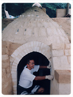
|
| The kiln has nine stories. Each floor is quite
spacious with small openings on both sides where the wood is
burnt. During the firing, works are laid on the shelf, facing
towards the fire door. 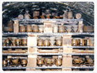 |
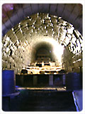
|
| 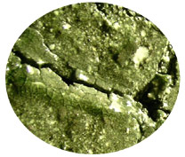
The inside of the kiln is surprisingly beautiful. It has an
ash-glazed lining wall that shines a bright emerald green. It
reminded me of a pottery dragon with its cracked scales, belching
forth fire. |
"I aim to fire the whole kiln, not just the potteries."
"The lining bricks are made from a similar material to the potteries
themselves. This aspect means that the whole environment inside the
kiln is balanced in the best possible way for my pieces. The thermal
conduction and cooling time are the same for the kiln and its contents.
One more consideration in this environment is the control of the ashes.
Ashes have a tendency to start glazing on an object with a lower calcining
temperature. Utilising this nature, I allow the lining bricks to collect
the ashes. The material for the lining has a lower calcining temperature
than the potteries.
The reaction to the heat from the glazed clay, the ash-covered clay
and plain clay are all different from each other. Glazed clay and
ashes contract whilst clay expands. If the ashes cover the works from
many directions, then the contraction power of the ashes overcomes
the clay, which can deform the potteries. It is therefore very important
to try to avoid this situation."
Taku-san's kiln style is called 'Ana-gama (cave kiln).' It is an old
style kiln abandoned centuries ago, after the introduction of a more
productive style, called 'Nobori-gama (climbing kiln)' from Korea.
The interior of the climbing kiln is divided into rooms. The partitions
make it easier then a cave kiln to control the temperature.
"I used to fire with a climbing kiln. However, I needed more straightforward
fire force to bring my works closer to the old Bizen masterpieces.
I decided to recreate this 'Anagama (cave kiln)'in a similar style
to those old kilns built in the 16th century. I had to study the structure
all by myself from documents and the old, surviving kilns themselves.
I'm still learning to fully understand the characteristics of 'Anagama
(cave kiln).' There are no masters left to ask for advice, so I learn
mainly from my own 'hands-on' experience.
Normally, in the climbing kiln, the front line is the best seat, so
potters put their best work there. But I learnt that the dynamism
of fire works differently in the cave kiln. I see it more like the
flow of water in a river. From the surface, the strongest force appears
to be occurring at the rock where the stream hits, but inside the
water, it is actually right behind the rock where the current caused
by the rock hits the main flow.
Similarly, the best spot in a cave kiln is behind the first line where
the convicted fire force and straight forward fire force meets."
Taku-san brought two pieces of imagery data from his production data.
"As you can see in these two images of before and after. The fire
hits the works in the front line and it tries to go through the works
to go upwards and hits the next row. As a result, fire forces draw
landscapes on the works."
Article and images courtesy Kiyomi Noma and wazen-online.
© wazen-online.
Next page
> Landscapes, Drawn by Fire
More on Mamoru Taku
Mamoru
Taku's biography
View
Mamoru Taku's Collection
View
Mamoru Taku's Special Collection
Takebe
- Mamoru Taku's Studio
Learn
about the "Himo-tsukuri" Method
Landscapes
on Bizen potteries
More Artists of the Week
More Articles
|